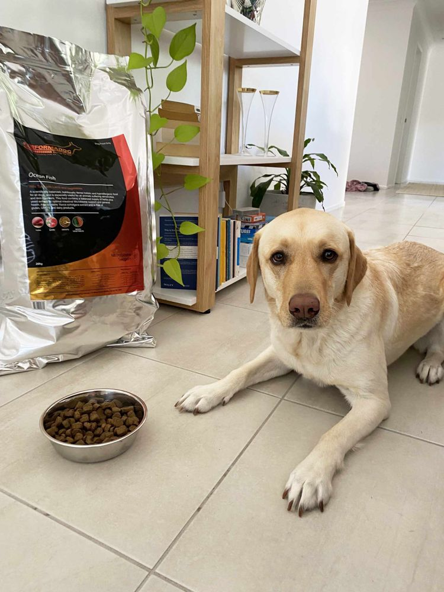
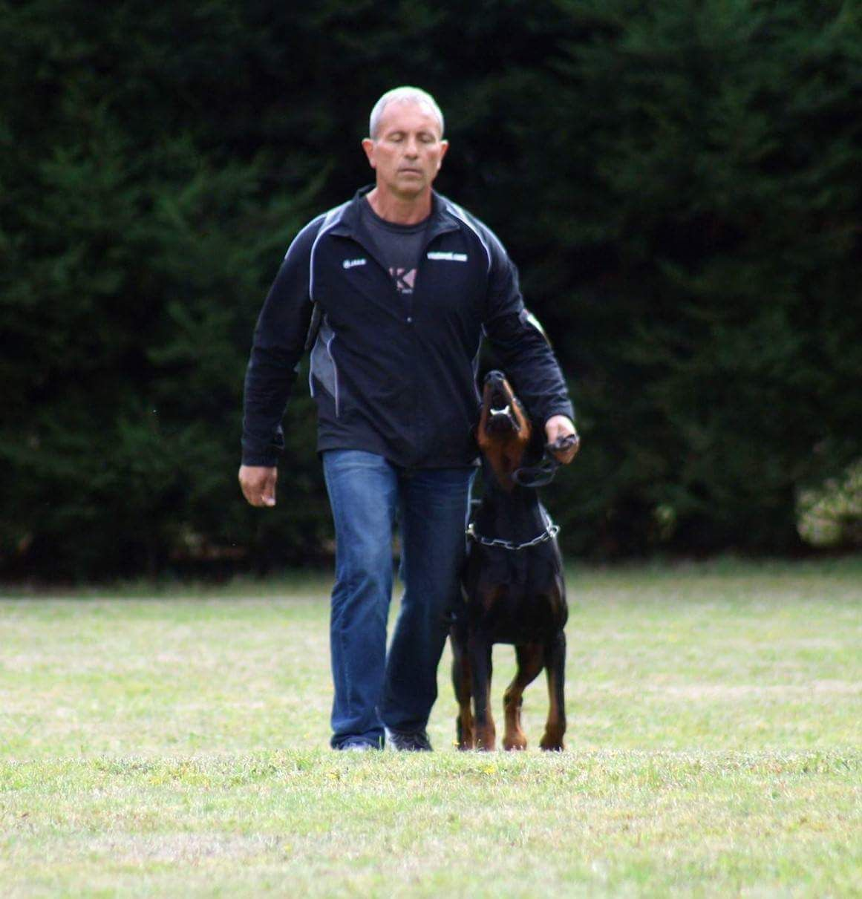
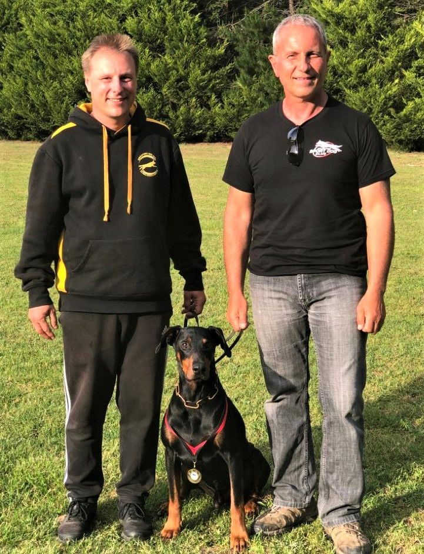
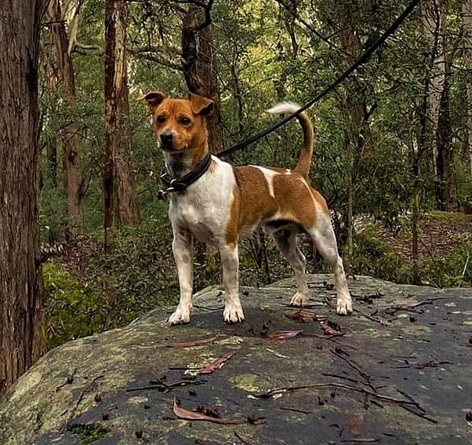
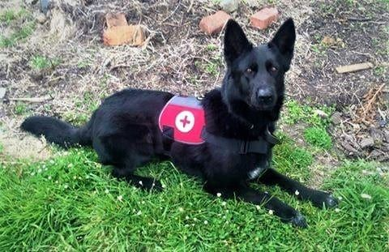
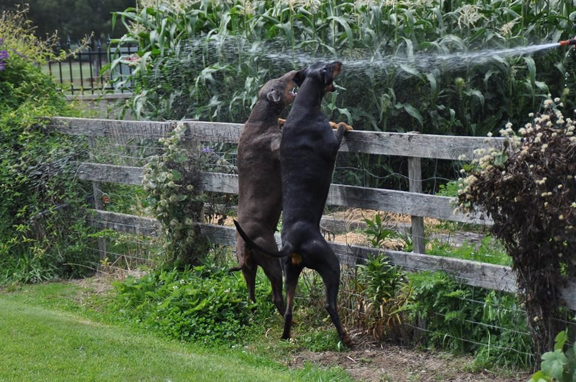

“She is of a healthy weight, regularly runs 5km-7km with me (she would run further if I let her), has a great digestive system, and her coat is shiny and thick.”

Abigail Jones-Walker
Owner
Nala · Labrador · Ocean Fish

Proof, not promisesRead the lab case studyShop / Sensitive gut & skin
 Pack shots: 1600px re-export needed
Pack shots: 1600px re-export neededWild-caught tuna and lamb with fish oil, kelp and yeast extract. It's the food most owners with itchy, allergic or sensitive dogs end up on, and the one most of the reviews on this site are about.
Formulated with animal nutritionist Bill Wiadrowski
Size
$10.67/kg on this size
Works out at $1.92/day for a 30 kg adult, from the feeding table on the bag
Secure checkout · free metro delivery over $150
Metro: free over $150. Regional: freight shown before you pay.
At a glance
22%
Crude protein
minimum
14%
Crude fat
minimum
1.3%
Calcium
for bone and joint
97.2%
Australian ingredients
made and owned here
0
Chicken
none in the bag
What's in it
Tap any ingredient to see what it does. Main ingredients in order, then a full vitamin and mineral premix. Preserved naturally with vitamin E and rosemary oil.
Order to confirm against the current bag
See every ingredient and where it comes from →Formulated to meet Australian and AAFCO nutrient standards. Kris: confirm the exact AAFCO / AS 5812 statement
From the table printed on the bag. Split it into two meals. Add about 15% on heavy work days; ease off for a lighter dog.

IGP 3Proven at the top of the sport
“Caesar is thriving on this food.”
Dr Michael Kern · Neurosurgeon, Perth · handler of Caesar, Von Forell Dobermann
Disclosure: Caesar was bred by Von Forell, Kris's kennel.
Read the full interview →Who makes it
Kris Kotsopoulos has bred and trained working dogs for over 45 years. When his sponsor's food changed and his dogs lost condition, he built his own with animal nutritionist Bill Wiadrowski. Every bag is fed in his Von Forell kennel first.
Reviews
Reviews of Performadog across the whole range, from handlers, breeders and family owners.
“She is of a healthy weight, regularly runs 5km-7km with me (she would run further if I let her), has a great digestive system, and her coat is shiny and thick.”

Abigail Jones-Walker
Owner
Nala · Labrador · Ocean Fish
“I've done extensive research into a lot of different foods and Performadog comes out on top by a very long way.”
Brett Talty
NSW
2 Jack Russells & 2 Maremmas · Ocean Fish
“I was so relieved and excited when I noticed improvements in Denzel's skin condition in the first two weeks.”

Gerard Carrington
NSW
Denzel · Miniature Fox Terrier
“We have recently accomplished the highest working dog title in a competition and Performadog has been an essential part of our success.”
Dr Michael Kern
Handler · Perth
Caesar · Von Forell Dobermann
Disclosure: Von Forell dog
“Since switching to Performadog Super Premium Dry Dog food I've found all my dogs have a huge increase in energy and are able to keep their peak condition in periods of intense work.”

James Craig
Director & handler · Tasmania K9 Search and Rescue
Search and rescue dogs
“On a recent visit to the vet… he noted how good the four dogs teeth were, to quote him 'Whatever you are feeding them, keep feeding it'.”

Keryn Mahoney
Tasmania
Dobermanns & Dachshunds
Disclosure: Tasmanian distributor

Add to this bowl
Purple carrot, 9-strain probiotic and prebiotic. From $43.
Over about 10 days. Start with 10% Performadog mixed into the old food and add roughly 10% more each day until it is the whole meal. Dogs with a sensitive gut can take a few days longer.
The food is dense, so most owners feed less by weight than their previous brand. Start from the bag table and adjust to your dog's body condition.
Return the bag at least 80% full with your invoice and we'll refund you. That's the palatability guarantee.
Australia-wide. Metro orders over $150 ship free; regional freight is shown before you pay. Most orders leave within 24 hours.
From $48 · 2.5 kg trial bag
Free metro delivery over $150 · subscribe, skip or cancel anytime · palatability guarantee